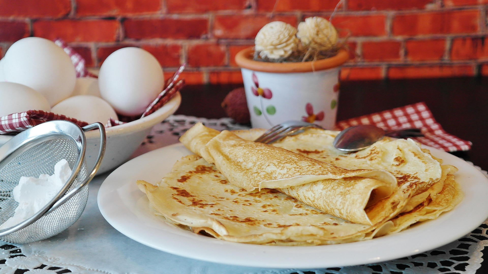

Description
Pancakes are soft, fluffy breakfast cakes made from a simple batter of
flour, milk, eggs, and baking powder. They are quick to prepare and
perfect for a sweet breakfast or brunch.
This recipe produces light and fluffy pancakes that can be served with
syrup, fruit, butter, or any toppings you enjoy.
Ingredients
- 1½ cups flour
- 3½ tsp baking powder
- 1 tbsp sugar
- ½ tsp salt
- 1¼ cups milk
- 1 egg
- 3 tbsp melted butter
Steps
- In a bowl, mix flour, baking powder, sugar, and salt.
- In another bowl, whisk milk, egg, and melted butter.
- Combine wet and dry ingredients and mix until smooth.
- Heat a pan over medium heat and lightly grease it.
- Pour batter onto the pan to form small circles.
- Cook until bubbles form on top, then flip.
- Cook until both sides are golden brown.
- Serve warm with syrup or toppings of your choice.